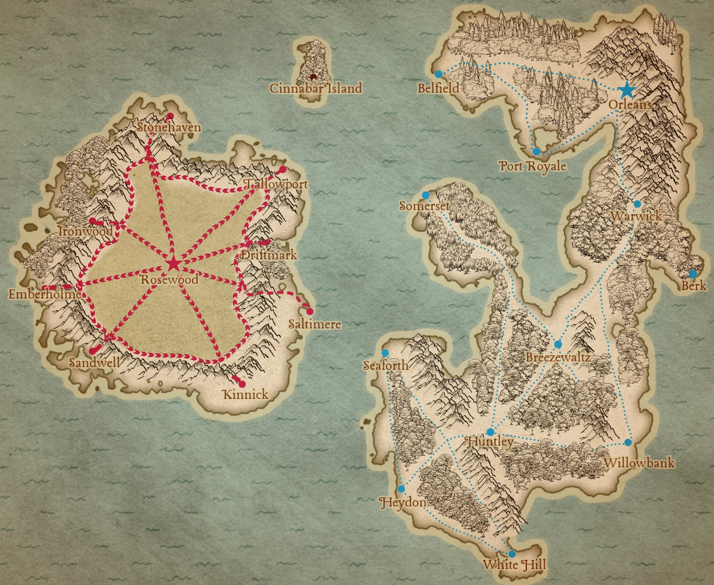
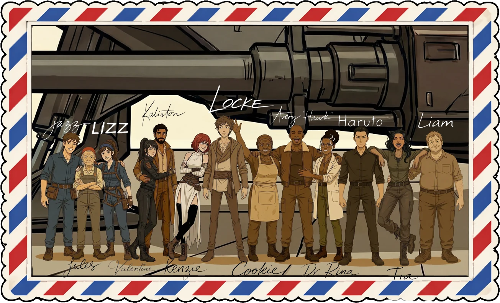
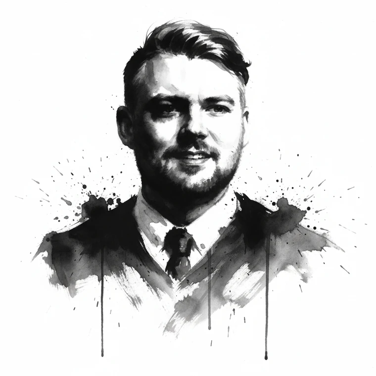

About
The world of Gaia, the crew of the Halcyon Days, the author behind them, and the press that publishes it all.
The World
Mother and planet.
Gaia is a world shaped by two ancient forces: the Azure Crystal and the Rose Crystal. These massive, sentient formations are more than geological wonders. They are the foundation of civilization itself, powering everything from skyships to weapons to entire economies. Azure runs clean and electric. Rose burns hot, fueled by steam and fire. The two cannot mix, and the civilizations built around them have been at war for over four hundred years.

The Iverian League controls the Azure Crystal, housed in the holy city of Breezewaltz. Iveria is a coalition of districts governed by noble families and overseen by a King. Its military backbone is the Armada, a fleet of massive skyships, including towering Capital-class vessels like the Orleander. Iveria values precision, faith, and duty, though centuries of war have frayed those ideals at the edges.
The Aurelian Domain is an empire built around the Rose Crystal. Ruled by an Emperor and organized around a philosophy of divine supremacy, Aurelia believes it is the rightful steward of all Gaia. Its outer cities and territories are held together by a combination of loyalty, tradition, and military force. Where Iveria leans toward restraint, Aurelia leans toward dominance.
The two powers have been locked in conflict since the Liberation War four centuries ago, and neither side has found a way to end it.
Both Crystals can bond with humans, creating enhanced warriors with extraordinary abilities.
Altiers are born from the Azure Crystal. A person must ingest a shard in a ritual called the Final Rite, and four out of five don't survive the process. Those who do gain the ability to dilate time: they perceive and move through the world at extraordinary speed, processing reality in fragmented bursts while everyone else stands nearly still. They fight with bladed weapons called sudas and burn through stamina quickly. The faster they push, the sooner they collapse.
Rosari bond with the Rose Crystal by swallowing a Rose shard. Their transformation is physical and dramatic: their bodies shift into powerful, furred forms with crystalline armor. They manipulate mass and density, hardening their skin to withstand blows, adding crushing weight to their strikes, and making the air around them feel like stone. Where Altiers are fast and fragile, Rosari are slow and devastating. If one gets a hand on you, you're already dead.
The two types of enhanced have been the weapons of their respective nations for centuries. They are soldiers, symbols, and, depending on who you ask, either blessed servants of a divine Crystal or living instruments of a broken system.
Travel and warfare in Gaia happen in the sky. Skyships range from small privateer vessels to massive Capital-class dreadnoughts, all powered by crystal shards. Azure ships run on electric current. Rose ships run on boilers and belch smoke. Shardshots are crystal-powered projectile weapons and serve as the standard armament. Sudas are close quarter weapons with liquid metal blades that form to the user's intent. Only Altiers and Rosari can wield these. The skies over Gaia are crowded, contested, and never safe for long.
The Colossus is an ancient, towering war machine of crystalline plating and impossible scale, powered by a heavy Azure shard at its core. It is, in the simplest terms, the child of a god, and when it moves, nations tremble. Dormant for centuries before the events of the series, its reawakening changes the calculus of the war entirely.
The Crew
As assessed by Dr. Catherine "Rina" Taylor, Ship's Physician. All opinions are professional. Most are also correct.

The Author

Hiya!
To those who don't know me:
I try, desperately, to be a structured, deliberate writer who balances intricate worldbuilding with sharp, character-driven storytelling. I don't always stick the landing, but when I do, you'll know. I pride myself on my attention to detail when it works in my favor, and I hand-wave it away when it makes me look silly. I like reforging my prose while keeping the heart of the story intact. Every moment should have weight. Character choices should feel real. The world should have depth beyond what's on the page.
I strive for writing that is clean, confident, and immersive. Stories should have propulsion, but the train tracks should be laid before leaving the station. Characters should never do what's convenient just to move the plot forward. We should walk the path with them. I hold myself to the high standards that won me third place in the Barrington Library eighth-grade writing contest. This is a promise to you, dear reader.
I am littered with misspellings, grammar mistakes, and questionable syntax. I also love Oxford commas. I will waste time rewriting an About Me blurb twenty times, even though I know no one will read it. I know. I don't make sense to me either.
If that sounds like your jam, stick around.
To everyone I know and love:
Thank you for reading my story. This is wild. I've been writing my whole life. I got my start on the mean streets of AIM chats, and now it's all Outlook emails, so putting together a novel about Halcyon Days feels surreal. I don't even know where to start, except to say this book wouldn't exist without the people in my life.
My wife, my son, our dog, my parents, my brothers, their families, and all the friends who feel like family. Special shout out to my wife's family. They support me by supporting my wife every day. What I'm saying is this book has a lot of authors, even though I'm the one (unfortunately) holding the pen.
I've been thinking about this story for twenty years. It changed, evolved, and refused to let me go. I've taken many cracks at putting it on paper over that time, just for my sanity, but none of them made it past Act 1.
Christmas 2024, I took a long drive halfway across the US and back again. I had a lot of time to talk to our dog, Lincoln. He was my co-pilot (and now our logo), and he helped me rearrange the beats that cracked the story wide open. What I'm saying is that dogs are the best.
Last but not least, thank you for your support of my work. I wrote this so that it could be read. I know it's not perfect, but I hope you find something to love about it, just as I did.
Citius. Altior. Longius. Maior.
—A.C. Bishkey
The Press
CALM Studios, Ltd. is a small press for big worlds. It publishes the speculative fiction of A.C. Bishkey, from the skyship saga of Halcyon Days to dream-world adventures for younger readers.
New work is serialized free as it is written, then collected into books. The studio is based in Northbrook, Illinois.